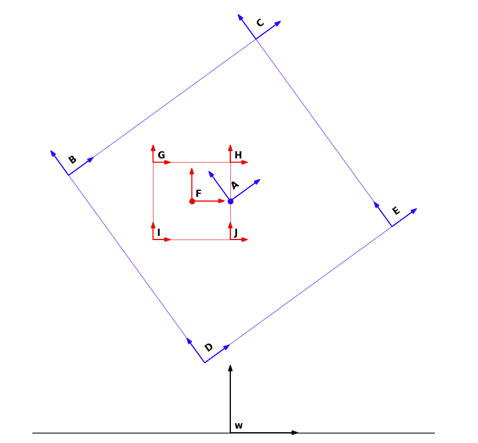
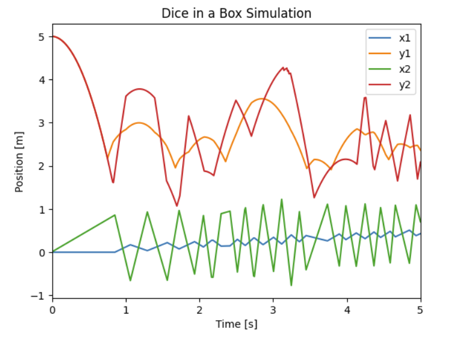
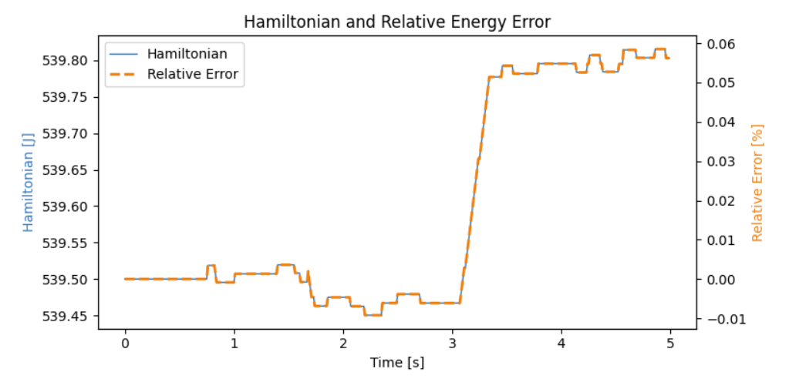

Project Overview
This mechanics project simulates a three-degree-of-freedom rigid body system featuring discontinuous contact dynamics: a square die bouncing freely inside a larger, falling square box under the influence of gravity.
Kinematic Architecture & Coordinate Frames
The system is mapped using six generalized configuration coordinates:
q = [ x₁ , y₁ , θ₁ , x₂ , y₂ , θ₂ ]ᵀ
Where (x₁, y₁, θ₁) tracks the absolute world position and orientation of the outer box center of mass (COM), and (x₂, y₂, θ₂) maps the absolute path and rotation of the internal die COM.

Rigid Body Matrix Transformations
Homogeneous SE(3) matrix representations transform positions between body frames and the fixed environment:
- Box COM {A} to World frame {w}: gwA matrix defined via coordinates (x₁, y₁, θ₁).
- Die COM {F} to World frame {w}: gwF matrix defined via coordinates (x₂, y₂, θ₂).
- Relative Boundary Formulations: Box corners B, C, D, E relative to frame {A} and die corners G, H, I, J relative to frame {F} are resolved via fixed parameter dimensions (L, l).
The helper function SE3 returns the matrix transformations
used for this project.
def SE3(angle, vector=False):
matrix = sym.eye(3, 3)
matrix[0, :] = sym.Matrix([sym.cos(angle), -sym.sin(angle), 0]).T
matrix[1, :] = sym.Matrix([sym.sin(angle), sym.cos(angle), 0]).T
if vector:
vector = sym.Matrix(vector)
matrix[:2, 2] = vector
return sym.simplify(matrix)
Mathematical Formulation
1. The Euler–Lagrange Equations
Body velocities were mapped by transforming the time derivative of the configuration frames into the body-fixed velocity twist vector V = (g⁻¹ · ġ)∨. The system Lagrangian (ℒ = T − V) was formulated by combining kinetic energy profiles (T = ½ Vᵀ M V) and gravitational potentials (V = mgy).
System Lagrangian (ℒ):
ℒ = −98.0y1(t) − 9.8y2(t)
+ 3.375 (dθ1(t)/dt)2
+ 0.041667 (dθ2(t)/dt)2
+ 5.0 (dx1(t)/dt)2
+ 0.5 (dx2(t)/dt)2
+ 5.0 (dy1(t)/dt)2
+ 0.5 (dy2(t)/dt)2
Using symbolic partial derivatives in sympy, the continuous
unconstrained equations of motion were solved simultaneously for
generalized acceleration (q̈) and parsed via
sym.lambdify into a fast numerical solver loop.
EL = []
for i in range(len(q)):
dl_dq = sym.diff(lg, q[i])
dl_dqdot = sym.diff(lg, qdot[i])
dl_dqdot_dt = sym.diff(dl_dqdot, t)
EL.append(dl_dq - dl_dqdot_dt)
2. Kinematic Boundary Constraints (Φ)
The framework enforces two constraint boundaries:
- Box Grounding: The outer box corners must remain above the floor (yworld ≥ 0).
- Die Containment: The four vertices of the die must remain inside the perimeter of the box, solved via the transform matrix chain gAF = gwA−1 · gwF.
The constraints are written such that when ϕ > 0 bodies are separated, ϕ = 0 contact occurs, and ϕ < 0 penetration has occurred.
## Constraints
Ln = 3 #side lenght of box
ln = 1 #side lenght of die
g_AF = SE3(q[5] - q[2], [q[3] - q[0], q[4] - q[1]])
posG = pos(g_AF, [-ln/2, ln/2]) # Top-Left
posH = pos(g_AF, [ ln/2, ln/2]) # Top-Right
posI = pos(g_AF, [-ln/2, -ln/2]) # Bottom-Left
posJ = pos(g_AF, [ ln/2, -ln/2]) # Bottom-Right
die_corners = [posG, posH, posI, posJ]
phi_die_walls = []
for posP in die_corners:
x_p = posP[0]
y_p = posP[1]
phi_die_walls.append(Ln/2 - x_p) # Right wall gap
phi_die_walls.append(x_p + Ln/2) # Left wall gap
phi_die_walls.append(Ln/2 - y_p) # Top wall gap
phi_die_walls.append(y_p + Ln/2) # Bottom wall gap
box_corners = [posB, posC, posD, posE]
phi_box_ground = []
for posB_w in box_corners:
phi_box_ground.append(posB_w[1])
phi_list = phi_die_walls + phi_box_ground
J(q) = ∂ϕ(q) / ∂q
Multiplying the Jacobian by the generalized velocity vector gives the normal velocity at the contact point:
ϕ˙ = J(q) · q˙.
3. Impact Update Laws
When any element inside the constraint vector drops below a numerical tolerance threshold Φi(q) < 0, time integration is temporarily suspended. The generalized velocities immediately before impact q˙⁻ are substituted by a new set of post-impact velocities q˙⁺.
The unknown post-impact state is obtained by solving the impulsive momentum balance together with the energy conservation equation:
p⁺ − p⁻ = λ · JactiveT | ℰ⁺ − ℰ⁻ = 0
Where p is system momentum, λ is the impact impulse magnitude, and ℰ
is total mechanical energy. This algebraic system is evaluated via
scipy.optimize.root to resolve the post-impact velocity
profile (q̇⁺).
Simulation Analysis & Verification
Physical Model Behavior: Between impact events, both rigid bodies display parabolic paths of their y-components (y₁ and y₂), as expected for bodies under constant gravity. During wall impacts, the die transfers momentum back into the outer box structure, causing it to rotate and slide in response, consistent with Newton’s third law.

The Hamiltonian of the system is conserved. The following plot shows that the relative energy error was less than 1 percent. A conserved Hamiltonian is expected given that this is a closed system (collisions are assumed perfectly elastic).
